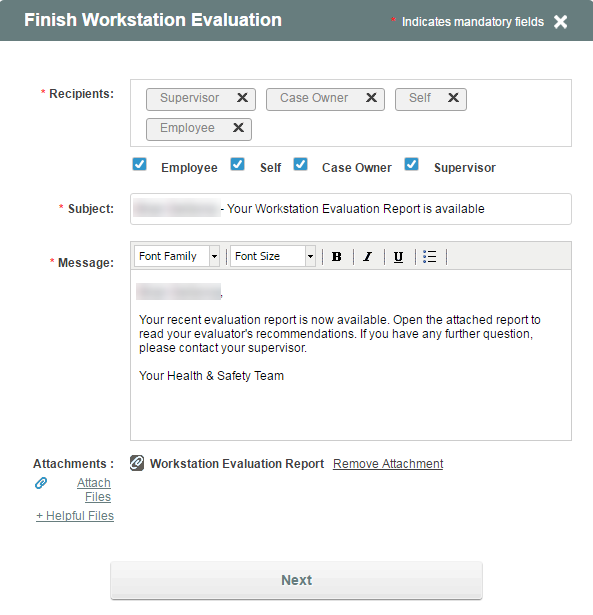
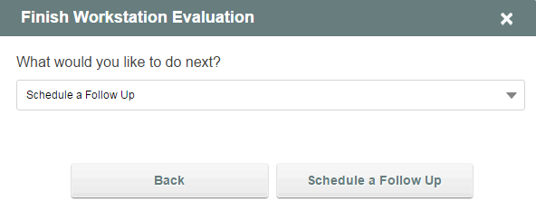
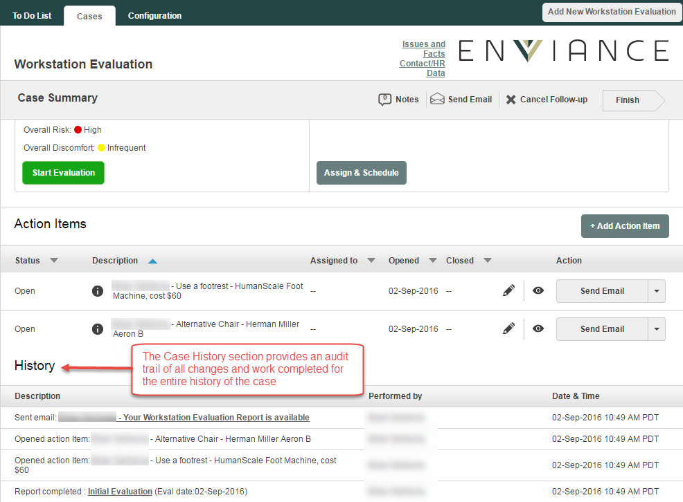

Once the report has been completed to your satisfaction, you can send the report to the employee, supervisor and others on your health & safety team. The message can be pre-populated from a template for consistency. The recipients of the message can also be predefined and configured in the system.

To complete the evaluation cycle, you must decide what the next step is for the case. Choices include Finish and Close, thereby completing the case, or Schedule a Follow-up. A case that moves to the follow-up phase retains all information from the initial evaluation and can be viewed and updated based on observations during the follow-up.

A complete history of each evaluation worksheet and report is available in the case history so that you can see the evaluators answers, notes and report for each phase. The follow-up can be reassigned and scheduled and follows the same cycle as the initial evaluation.
